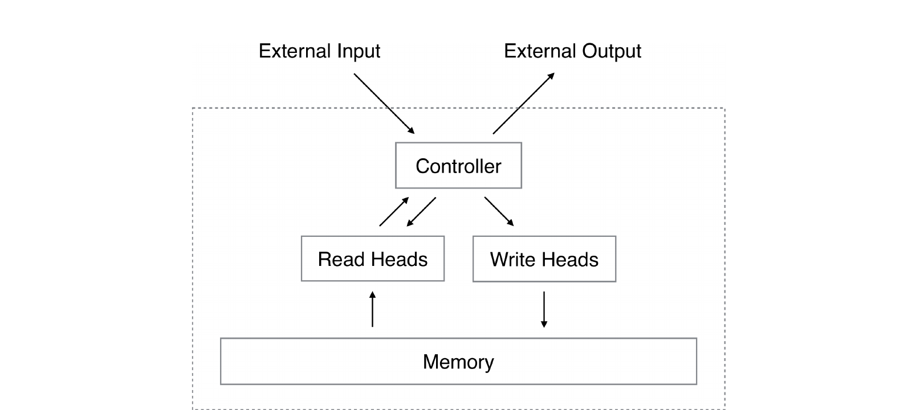
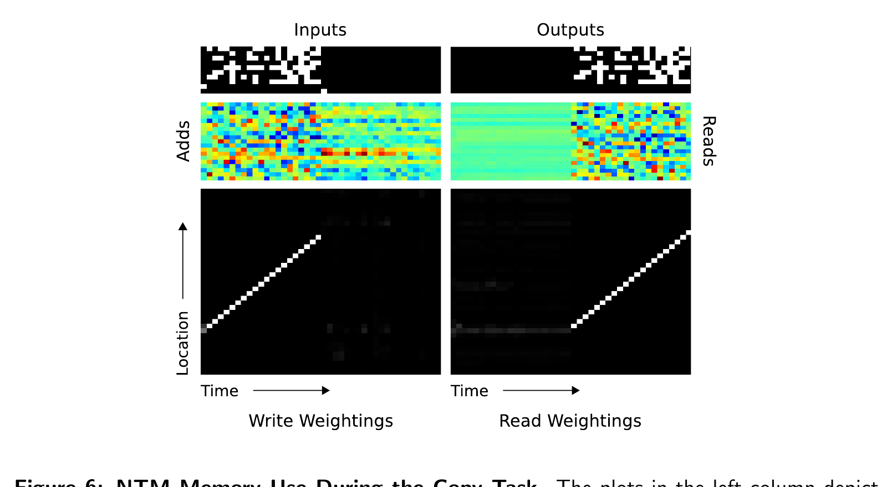

1 · Prerequisite bridge
A hidden state is a desk; memory is a library.
An ordinary recurrent network carries a fixed-size hidden state from one step to the next. That state can be very capable, but it must serve as both working desk and long-term notes. When a task asks the model to retain, retrieve, and revise many items over time, packing everything into one changing vector can become difficult.
Analogy: a researcher at a card catalogue. The researcher keeps a small amount in working memory, but writes fuller notes on numbered cards. They can find a card because its contents match a clue, or continue from the card they visited a moment ago. An NTM gives a learned controller a version of that catalogue.
The analogy has a boundary. The model does not use a literal finger to select one card. It emits a non-negative weighting over all rows, so reading and writing change smoothly enough for gradient descent to train the addressing decision.
2 · The paper's move
Make memory access learnable, not pre-programmed.
A digital computer can jump to one exact address, but an abrupt discrete choice does not naturally provide a gradient for learning. The paper replaces it with a soft address: a distribution that can focus strongly on one row or weakly on several. A controller produces the controls; read and write heads turn them into memory operations.
The causal move: instead of asking a controller to hold every useful detail internally, give it a separate matrix and train it to decide both what to store and where to access it.
3 · Actors and shapes
Keep content separate from an address.
The memory is a table, not one giant hidden vector. A row holds content; a weighting says how much a head uses each row. Name these before following the operations.
| Object | Shape | Job |
|---|---|---|
| Mt | N × M | Memory with N addressable rows, each holding an M-number vector. |
| wtr, wtw | N numbers, summing to 1 | Read or write address: the strength assigned to every memory row. |
| rt | M numbers | The content returned by a read head after mixing rows. |
| kt, βt | M numbers; one positive scalar | A content key and its match strength. |
| et, at | M numbers each | The write head's erase pattern and new content to add. |
A valid address has weights between 0 and 1 that sum to 1. It is therefore a soft answer to “where?”—not yet the information retrieved from that place.
4 · Read and write
Read a mixture; revise by erase, then add.
A read head forms a weighted sum of memory rows. If one weight is near 1, this behaves much like looking up one card; if several weights are nonzero, it blends them.
Trace A · A soft lookup
Toy teaching example. Let the three memory rows be [1, 0], [0, 2], and [3, 1]. Suppose the address is [1/7, 2/7, 4/7].
Row three contributes most, but the head did not choose it absolutely. That softness is what keeps the operation differentiable.
A write is more careful than “replace row.” The head first selectively erases features, then adds new features. For one row, the paper's two operations combine as follows:
Trace B · Erase, then add
Toy teaching example. Row one is [2, 1]. Its write weight is 0.75; the erase vector is [1, 0.5]; the add vector is [4, 2].
The first feature was strongly erased before new content arrived. A second row with a smaller write weight would change less. Soft writes are trainable, but they can also blend incompatible information.
Predict before reveal · What happens to one row?
A row holds [6, 2]. Its write weight is 0.5, erase vector [1, 0], and add vector [4, 8]. What is its new value?
Answer: [6, 2] ⊙ [0.5, 1] + [2, 4] = [5, 6]. The first feature is partly erased; the second is retained, then receives the addition.
5 · Address construction
Find a landmark, then walk from it.
Content matching is useful when the model can describe what it needs. But a sequence may contain arbitrary values that must still be visited in order. The paper therefore combines content-based addressing with continuity from the previous location, a learned circular shift, and sharpening.

Original paper Figure 1 · PDF p. 5- Match by content: compare a key kt with every row and normalize the match scores into a content address.
- Blend: choose how much to use that fresh content address versus the previous address.
- Shift: move the address by a learned distribution over allowed relative offsets.
- Sharpen: concentrate the shifted distribution before the head reads or writes.
Trace C · Keep your place, then advance
Toy teaching example. Suppose the previous address is [.05, .75, .15, .05], a content lookup proposes [.10, .50, .30, .10], and the gate uses 60% of the new content proposal.
After a one-row forward circular shift, the mass is [.08, .08, .60, .24]. Squaring and renormalizing as a sharpening step gives approximately [.015, .015, .836, .134]. The head has mostly kept its place, moved forward, then made its focus decisive.
Address-strength instrument
Move the slider to see how a stronger sharpening exponent changes a fixed, slightly blurry address.
Static reading: with γ = 1, the address stays [0.10, 0.20, 0.60, 0.10]. With γ = 2, it becomes approximately [0.02, 0.05, 0.90, 0.02]. Sharpening can reduce drift from soft shifts; it does not turn the architecture into a literal hard pointer.
6 · Read the paper's evidence
The memory trace makes a proposed procedure visible.
On the Copy task, the network receives random binary vectors, then a delimiter, and must reproduce the full sequence without further input. The models were trained on sequence lengths from 1 to 20. The authors inspect a test episode to ask whether the NTM used its memory rather than only producing a good output.

Original paper Figure 6 · PDF p. 13The surrounding experiments support a scoped claim: on this synthetic Copy task, the NTM variants learned faster and to lower sequence cost than the standalone LSTM, and the paper shows NTM copying test sequences longer than its training range while the LSTM's output degrades past length 20. The Figure 4 length-120 example also contains a duplicated vector that shifts later outputs—a useful reminder that “mostly right” can still create a high sequence loss.
What the evidence does not establish
These are preliminary supervised experiments on synthetic binary-sequence tasks. They do not prove that NTMs learn arbitrary programs, solve modern long-context reliability, or always use exact symbolic addresses. The finite 128-location memory can wrap around and overwrite earlier content, and location shifts can disperse a soft focus.
7 · Misconception clinic
Keep the soft part and the scope in view.
“A memory read fetches one exact row.”
Not in the NTM formulation. A read is a weighted mixture of rows. A very sharp weighting can approximate an ordinary lookup, but the model remains differentiable because weights can vary continuously.
“The controller has no memory of its own.”
Not necessarily. The paper allows a feedforward or recurrent controller; an LSTM controller carries an internal state as well as accessing the external matrix.
“Content lookup and location lookup are interchangeable.”
They solve different parts of a procedure. Content lookup can jump to a matching landmark; location-based shifting can continue through neighboring positions even when their contents are arbitrary.
“The name proves practical Turing-complete reasoning.”
No. The name is an architectural analogy. The paper demonstrates learned behavior on limited algorithmic tasks; it does not establish universal or reliable general-purpose program execution.
8 · Active recall
Rebuild the mechanism without looking back.
What is the difference between a memory row and a weighting?
A row stores an M-number content vector. A weighting assigns how strongly a head reads or writes each of the N rows.
Why use a soft address rather than a hard row choice?
A soft address lets a small change in controller parameters cause a small change in memory access, which supplies gradients for learning where to read and write.
What are the two parts of a write?
Selective elementwise erase, then addition of a new vector, each scaled by the write weighting for that row.
Why do location shifts matter after a content lookup?
They let a head continue from a found landmark through a sequence of nearby rows instead of requiring every next item to match by content.
State one result with its boundary.
On the paper's synthetic Copy task, NTM variants learned faster than the standalone LSTM and showed stronger length extrapolation. That is evidence for the reported models and tasks, not a guarantee of general algorithm learning.
9 · Connect it to your mental map
Attention can become a persistent workspace.
Transformers
Both use learned weighted retrieval. Transformer attention reads token representations from its current context; an NTM can read from and revise a memory matrix across time steps.
DQN
DQN replay memory stores past transitions for training. NTM memory is an internal, differentiable working notebook used during a forward computation.
ResNet
Residual connections make preserving a useful representation easy through depth. NTMs make storing, retrieving, and revising representations possible through time.
Federated Averaging
FedAvg moves learning work toward local data. NTMs move temporary information out of a controller state into an addressable workspace; both expose where a resource constraint lives.
10 · Takeaway
An NTM learns both its notes and its place in the notes.
The controller writes to a soft address, reads a weighted mixture back, and can combine content lookup with location shifts to jump and then scan. That turns external memory from a fixed program into a differentiable workspace—powerful on the paper's tasks, but still soft, finite, and empirically bounded.